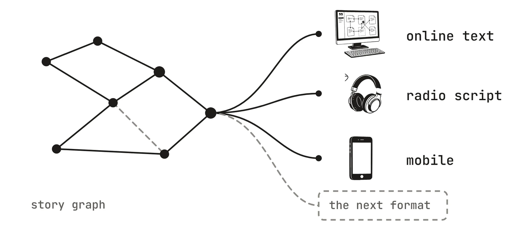

A harness, not another tool
A model on its own answers questions. A harness is everything around it that makes the answers usable for a particular kind of work: what material it may see, which tools it may call, what it must prove, who decides, and what is recorded. Open Journalist is a harness for journalism. Its editorial layer consists of the Story Repository, the quality gates with human sign-off, the editorial roles, the sensitivity-based routing of material to models and, later, the Trusted Content Pool.
The core is model-agnostic and runs locally. The editorial layer is built behind interfaces, independent of the agent core, so that the core stays replaceable.
Rules the code may never break
- Agents propose, people decide. Anything an agent adds to a story's record is “proposed” until a person confirms it.
- Agents change documents only as suggestions and never mark a task as done or a gate as passed.
- Outbound actions, such as sending a request, publishing or writing to the Pool, require explicit approval.
- Release is blocked until the required gates are signed off by the responsible roles.
- The sensitivity class of material decides which models and services may receive it, enforced in code and network configuration.
- Skills never relax a gate, and every change to a skill is approved by a person.
- Markdown files are the source of truth. Indexes, graphs and caches can be deleted and rebuilt.
- The Pool receives attestations, never raw material that could identify a source.
- A claim without evidence is shown as a gap, never filled with generated text.
A change that weakens one of these rules is a design change and needs a decision record, not a pull request.
The story graph

The story graph is a knowledge graph in which events are the nodes and the relations between events are the edges: one event follows another, is part of it, updates or supersedes it, causes it, contradicts it, or is the same event. People, organizations and places are objects of their own; claims, sources and evidence hang on the events.
A story is an ordered selection of events told from an angle. One event can belong to many stories, and a story can be told in many forms: a web article, a radio script, a briefing, or a format nobody has asked for yet. Journalists do not have to think in graphs to use it; structure is a by-product of normal work.
The idea comes from structured journalism, in particular from David Caswell, who described the event as the basic unit of news. At the AI for Media Network's symposium in Tutzing in November 2024, the working group “Unit of News” concluded that a knowledge graph with events as nodes is the preferred way to store journalistic information. Open Journalist adds what research needs: evidence as the root of every statement, claims kept apart from events so that contradictions stay visible, and confirmation by a person as the way the graph is curated.
The story graph is what is kept; the Story Repository is where it is kept: the store with the original material, the derived text, the graph, the log of every change and the index, in open file formats you can read without the application.
Evidence and states
Every event and claim points to the passage, line, page or time range that supports it. A figure points to a stored query with its parameters and the hash of the table it ran on. Without evidence, a statement stays a proposal.
By the agent, open.
Evidence found.
Does not hold.
No evidence.
Signed off.
The interface tells states apart by stroke, label and typeface, not by color: proposed is dashed, confirmed is drawn through in ink, a contradicted finding has a heavier frame and is struck through, a gap is a dashed circle. Figures the system knows for sure are set in a monospaced typeface.
Finding is not verifying. A conspicuous pattern from an analysis is a lead: possible material for a story, not a finding. It becomes a claim only after a person has verified it.
Seven phases of editorial work
The product follows the editorial process from the idea to the time after publication. Journalists see these phases, not the machinery. The prototype covers phases 1 to 5 in its five steps.
| Phase | The person | The agent |
|---|---|---|
| 0 Idea and topic selection | Observes, proposes, decides to pursue a story | Collects signals, drafts a topic proposal |
| 1 Research | Finds and questions sources, collects and verifies material | Opens material up, lists leads, anchors evidence, counts independent sources |
| 2 Conception | Chooses angle, medium and narrative form | Proposes structures from confirmed units |
| 3 Production | Writes, records, edits | Drafts from confirmed units, marks gaps |
| 4 Quality assurance and release | Edits, checks facts, signs off | Shows what is still open, prepares checklists |
| 5 Handover and publication | Hands over to the CMS or production, publishes | Exports with evidence, labels and provenance |
| 6 After publication | Corrects, analyzes, learns | Passes corrections on to everything that used the story |
Quality gates
Eighteen checkpoints, G01 to G18, each with a checklist and a responsible role. A gate is always decided by a person; an agent can prepare the checklist but never pass it.
- Always required: G03 source and evidence check, and G14 sign-off and release.
- In a team: G10 editing with a second pair of eyes.
- When the content calls for it: for example G05 request for comment, G06 image, video and audio verification, G07 figures and statistics, G08 quotes and interviews, G11 legal review, G12 labeling.
- After publication: G17 correction and G18 retrospective.
A newsroom can switch on further gates for its own work. A decision refers to a fingerprint of the story: if the story changes afterwards, the gate counts as open again until a person decides anew.
Sensitivity classes
Every piece of material carries a class, from the strictest to the least strict. Everything derived from it, such as text, claims and drafts, inherits it. Each model endpoint has a list of classes it may receive.
| Class | Meaning | Rule |
|---|---|---|
| T0 | Source protection | Never sent to any online service; only a model on this computer |
| T1 | Confidential | Only to endpoints explicitly allowed; planned: names replaced by placeholders on this computer before sending |
| T2 | Internal | Default for a new API endpoint, together with public |
| public | Public | May go to any configured endpoint and to the web search |
A request is checked before it is sent, and refused if no allowed endpoint exists. Web research runs at arm's length: a separate search never sees your material, and each query is shown before it goes out, because a search history can reveal an investigation.
Trusted Content Pool
Later, teams, media organizations and networks will share signed attestations that a story unit was verified, without handing over the material behind it, so that nothing that could identify a source leaves the newsroom. The Pool starts within one organization and grows into a network across organizations, with trust tiers, a transparency log and a correction feed. Pool gates P01 to P09 protect it against poisoning. In the prototype, news sources connected over MCP are its first view; their items count as context, never as evidence.
Technology
| Layer | Built with |
|---|---|
| Core | Python 3.11+, FastAPI and uvicorn, an own lean agent loop without a framework, OpenAI Python SDK for any compatible endpoint |
| Data | SQLite as working store, DuckDB for read-only queries on tables, originals stored unchanged with SHA-256 |
| Interface | React, TypeScript and Vite; React Flow for the graph; Inter and JetBrains Mono, bundled so the app runs offline |
| Local modules | faster-whisper for transcription and voice input; rule-based pseudonymization |
| App | pywebview window, packaged with PyInstaller for Windows and macOS; runs only on your own computer |
| Standards | Model Context Protocol for tools and news sources, Agent Skills format for editorial knowledge, NewsML-G2 planned for print handover |
Every third-party component is checked against the project's license matrix before it is added. The project itself is licensed under the European Union Public Licence 1.2.